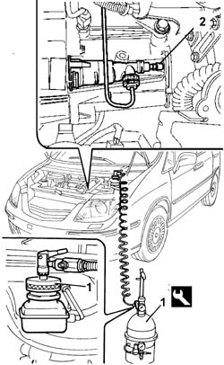

0010T67 HYDRAULIC CLUTCH SYSTEM BLEED AIR
- Path
- Procedures > 00 MAINTENANCE > 0010 NEW VEHICLES AND MAINTENANCE > 0010T VEHICLE FLUIDS > 0010T67 HYDRAULIC CLUTCH SYSTEM BLEED AIR
- Kind
- repair procedure (removal / refitting; the operation number is the code)
- Applies to
- engines: 2.0 16v, 2.0 16V JTD, 2.2 16V JTD; all production periods
- Interactive page
- https://sloeber94.github.io/elrnDB-fUlss/en/#/179006826
Applies to: engines: 2.0 16v, 2.0 16V JTD, 2.2 16V JTD; all production periods
Applies to: engines: 2.0 16v, 2.0 16V JTD, 2.2 16V JTD; all production periods
- When topping up the brake/clutch fluid, remove the reservoir cap and top up until the maximum level is reached.
 | Description | Qty. | Component | Type | Classification |
|---|---|---|---|---|---|
. | TUTELA TOP 4 | 0.62 litri | BRAKE FLUID | Synthetic fluid | NHTSA. 116 DOT 4 ISO 4925 SAE |
- The symbol on the container identifies synthetic type brake/clutch fluids, distinguishing them from mineral type fluids. The use of mineral type fluids irreparably damages the special rubber seals in the hydraulic brake/clutch system.
- Check that the brake/clutch fluid in the reservoir is at the maximum level; if this is not the case, top up using the recommended fluid.
- Position the vehicle on a lift.
- Check that the brake/clutch fluid is between the MIN and MAX levels.
Op. 5010B18 CLIMATE CONTROL UNIT AIR INTAKE - R.R.
Op. 1048A10 AIR CLEANER FILTERING ELEMENT - REPLACE
1. Remove the brake/clutch fluid reservoir cap and connect the equipment to the reservoir.
 | Description | Code | Function |
|---|---|---|---|
1 | Brake - clutch bleed equipment | 1.806.097.000 | Brake-clutch bleeding equipment |
2. Connect the recovery device (pipe and reservoir) to the actuator bleed valve.
- Open the fluid reservoir tap slowly.
- Wait for all the air in the hydraulic system to escape.

Topics linked from this page (2)
Topics that link to this page (7)
- 1820B30 CLUTCH HYDRAULIC ACTUATOR - R.R.
- 1820B20 MASTER CYLINDER (PUMP) - R + R
- 1820B40 HOSE FROM CLUTCH RESERVOIR TO MASTER CYLINDER (PUMP) - R + R
- 1820B49 SUPPLY PIPE FROM (PUMP) - MASTER CYLINDER R.R.
- 3330C10 MASTER CYLINDER (PUMP) - R + R
- 3330C30 BRAKE FLUID RESERVOIR - R + R AND WASH INSIDE
- 3330D20 ONE-WAY VALVE FOR BRAKE SERVO - R+R